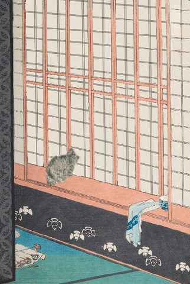
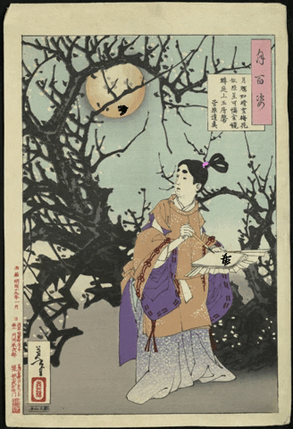

Research Page
Cross Cultural Influences
During the late nineteenth century, Japanese prints began to influence Western art in important ways. When Japan opened trade with Western countries in the 1850s, Japanese woodblock prints started spreading throughout Europe. These prints, known as ukiyo e, introduced styles and design ideas that were very different from traditional Western painting. Japanese artists often used bold outlines, flat areas of color, unusual viewpoints, and asymmetrical compositions. Many Western artists became interested in these techniques and began experimenting with them in their own work. Because of this exchange of ideas, Western art began to move in new directions, especially in movements like Impressionism and Post Impressionism.
Before Japanese prints became widely known in Europe, Western art focused heavily on realism and perspective. Artists were trained to create depth and realism through careful shading and detailed backgrounds. Japanese prints, however, approached art very differently. Instead of focusing on realism, they emphasized design, balance, and the overall composition of the image. Scenes were often simplified and arranged in a way that focused on strong shapes and patterns. These ideas were very exciting to Western artists who were beginning to question traditional artistic rules and were looking for new ways to express their ideas.
Another important feature of Japanese prints was the way they used perspective. Western art typically followed a system of linear perspective, where objects appear smaller as they move farther into the distance. Japanese artists often ignored this rule and instead created compositions that felt more flat and decorative. This made the artwork feel more graphic and modern. Many Western artists began experimenting with this approach after seeing Japanese prints.

One of the most well known Japanese prints that influenced Western artists is The Great Wave off Kanagawa (1831) by Katsushika Hokusai. This woodblock print shows a huge wave crashing over several boats while Mount Fuji appears in the distance. The image focuses more on movement and design than on realistic depth. The large wave dominates the scene and creates a strong sense of energy and motion. The curved shape of the wave and the small boats beneath it create a dramatic visual effect.
Artists in Europe were drawn to this style because it looked very different from the traditional realism they were used to seeing in Western art. Hokusai’s work showed that art could focus more on design and emotion rather than strict accuracy. This was important because it helped open the door for Western artists to think differently about how an artwork could be organized and what it could emphasize.
The influence of Japanese prints can also be seen in the work of Claude Monet, who was one of the main artists connected to Impressionism. Monet actually collected Japanese prints and displayed them in his home. He often studied them carefully and admired the way they used color and composition. His painting Water Lilies (1906) shows some of the same ideas found in Japanese printmaking. Instead of painting a traditional landscape with a clear horizon line, Monet focuses on the surface of the water and the colors reflected in it. The viewer’s attention is drawn to the patterns of light and color rather than the depth of the scene.
Monet’s approach to painting became more focused on atmosphere and visual experience rather than exact detail. This change in style reflects the influence of Japanese prints, which often focused on capturing a moment or visual impression rather than creating a perfectly realistic image. The peaceful and immersive feeling of Monet’s Water Lilies paintings demonstrates how Western artists began adopting ideas from Japanese design.
Vincent van Gogh was another Western artist who admired Japanese prints. Van Gogh was especially interested in the bold colors and strong outlines used in Japanese artwork. He believed that Japanese artists had a unique way of seeing the world and capturing everyday scenes in an artistic way. Van Gogh even copied several Japanese prints so he could better understand their style and techniques. This practice helped him develop his own artistic style.
One of Van Gogh’s paintings, The Courtesan (1887), was inspired by a Japanese print by the artist Keisai Eisen. In this painting, Van Gogh uses bright colors, thick outlines, and decorative patterns that reflect the influence of Japanese printmaking. The figure in the painting stands out clearly against a patterned background, creating a strong visual contrast. This approach is similar to the way figures are often presented in Japanese prints.
Van Gogh was not simply copying Japanese art, but rather adapting its ideas into his own style. He admired the simplicity and clarity found in Japanese prints and tried to incorporate those ideas into his paintings. His work shows how cross cultural influence can inspire artists to create something new while still respecting the original source of inspiration.
Japanese prints also influenced Mary Cassatt, an American artist who worked closely with the Impressionist movement in France. Cassatt became interested in Japanese prints after attending a large exhibition of them in Paris in 1890. This exhibition introduced many European artists to the unique style of Japanese printmaking. After seeing the exhibition, Cassatt began experimenting with similar techniques in her own work.
Her print The Bath (1891) shows strong Japanese influence. The image shows a quiet and personal moment between a mother and child. The scene is viewed from an unusual angle that looks down onto the figures, which is a perspective often used in Japanese prints. Cassatt also uses flat areas of color and strong outlines to simplify the image. These design choices help focus the viewer’s attention on the relationship between the figures rather than on detailed backgrounds.

The popularity of Japanese art in Europe during this time is often referred to as Japonisme. This term describes the fascination that Western artists and collectors had with Japanese art and design. Japanese prints became widely collected and studied by artists across Europe. Their influence could be seen not only in painting, but also in areas such as graphic design, illustration, and decorative arts.
Many Western artists were excited by Japanese prints because they offered a completely different way of thinking about art. Instead of focusing only on realistic shading and perspective, Japanese prints emphasized design, composition, and color. This encouraged artists to experiment with new techniques and break away from older traditions. The influence of Japanese prints helped push Western art toward more modern and expressive styles.
In conclusion, Japanese woodblock prints had a strong impact on Western art during the late nineteenth century. Artists such as Monet, Van Gogh, and Cassatt were inspired by the bold lines, flat colors, and creative compositions used in Japanese printmaking. Works like The Great Wave off Kanagawa, Water Lilies, The Courtesan, and The Bath show how Japanese artistic ideas helped influence Western artists and shape new styles.
This exchange between cultures played an important role in the development of modern art and demonstrates how artistic ideas can travel across cultures and inspire creativity in new ways.